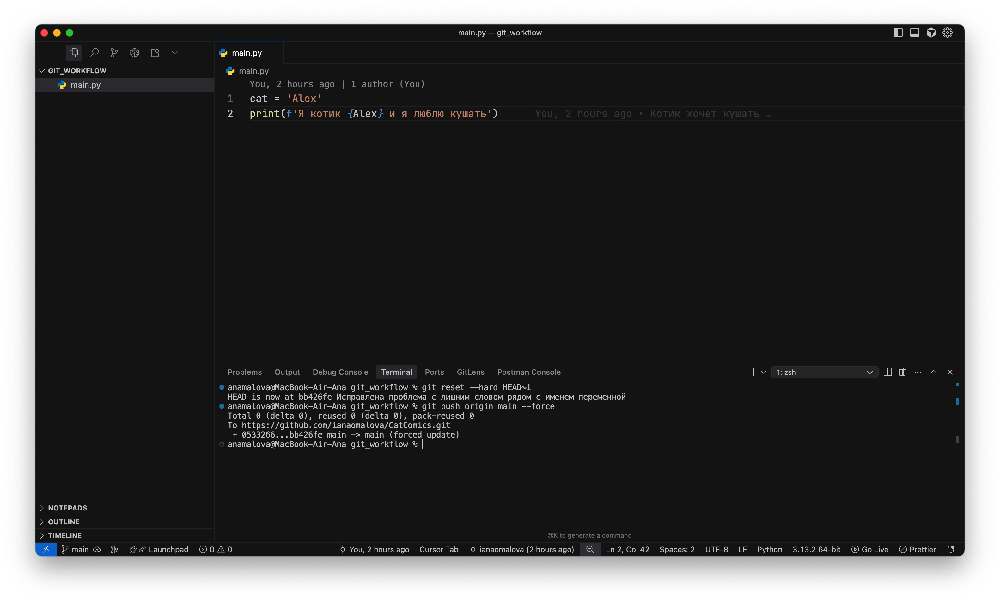

Что делать если последний комит все сломал на проде и нужно откатиться
Внезапно, Егор Б. осознал, что перепутал 54 и 25 и отправил в гит строку, что оказывается, он любит 25. Что делать?
Откатить изменения!
Reset'ы
Формально есть 3 варианта это сделать:
git reset --soft HEAD~1
Эта команда откатывает коммит, но сохраняет все изменения в staging (индексе).
- История перематывается на коммит назад
- Файлы остаются отмеченными как “готовые к коммиту”
- Удобно, если нужно переделать коммит (например, исправить сообщение или добавить ещё изменения)
git reset --mixed HEAD~1
Эта команда откатывает коммит и сохраняет изменения только в рабочей папке (working directory), но убирает их из staging.
- История перематывается
- Изменения в файлах остаются, но они как будто только что сделаны, не добавлены в индекс
- Удобно, если хочется переписать коммит, но самому решить, что снова добавлять в git add
git reset --hard HEAD~1
Самый жёсткий вариант — полный откат.
- История перематывается
- Изменения в staging и в файлах удаляются
- Рабочая папка возвращается в состояние выбранного коммита
- üõë Всё, что не закоммичено, исчезнет навсегда
Все три варианта reset (--soft, --mixed, --hard) меняют только локальную историю. То есть ветка у тебя на компе сдвигается на старый коммит, а на GitHub (или GitLab) пока остаётся как была.
Что делать, чтобы заставить историю переписаться и на сервере?
Ответ:


Но помните, если вы работаете не одни, то если кто-то уже успел забрать старую ветку и сделать свои коммиты, при следующем git pull у них начнётся ад с конфликтами
Revert
Когда переписывать историю опасно (особенно если проект общий и на проде), то вместо этого можно использовать git revert
В отличие от reset, он не стирает старый коммит, а создаёт новый, который отменяет изменения из выбранного
Итог:
- Если Егор Б. опозорился локально — можно сделать reset
- Если опозорился на проде и все уже увидели его любовь к 25 — лучше revert
Но если он не хочет, чтобы история помнила его позор, то делаем reset hard:

После этого и локальная история, и история на сервере забудут про любовь Егора Б. к 25